Live responsePrompt dispatcher during business hours
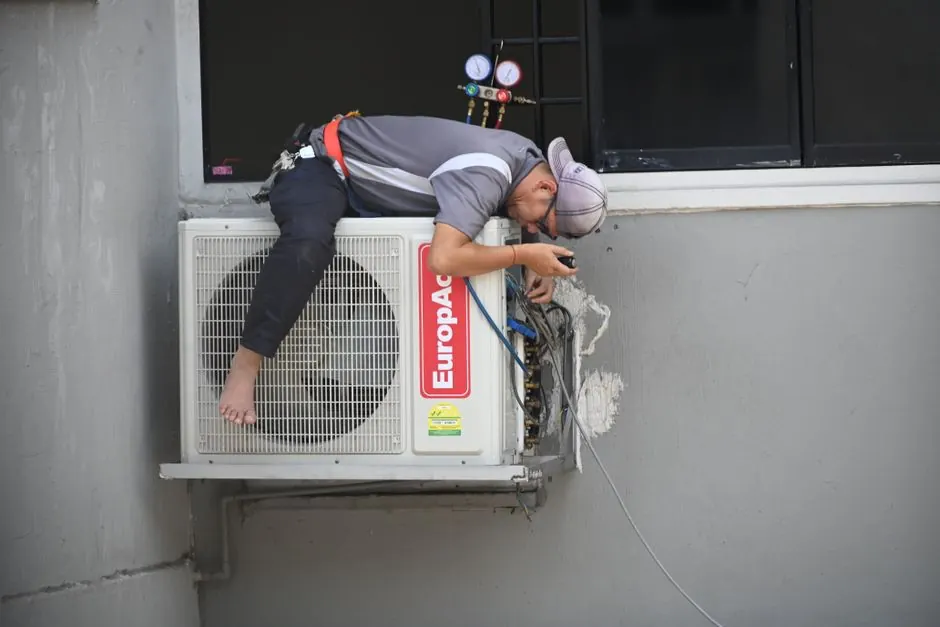
Bayfront Dryer Works
Sarasota, Florida • Same-Day Local Dryer Service
Our services
Professional Dryer Repair Services in Sarasota, FL
Expert diagnostic and repair services for electric and gas dryers throughout Sarasota County. Same-day appointments, upfront pricing, and factory-trained technicians.
Skilled teamDedicated dryer specialists
Clear optionsScope and price before work
Clean finishProtect, repair, test, tidy
Work backedThorough diagnostic standards
Complete service support
Specialized Dryer Repair Solutions We Provide
Our appliance repair services in Sarasota include a range of solutions tailored to meet your needs. We provide emergency dryer repair services near me for urgent issues.
01!Urgent response
Dryer Not Heating Repair
If your dryer is not heating, our team can quickly diagnose and fix the problem. This service is essential for efficient laundry days in Sarasota, ensuring your clothes dry properly.
Explore Dryer Not Heating Repair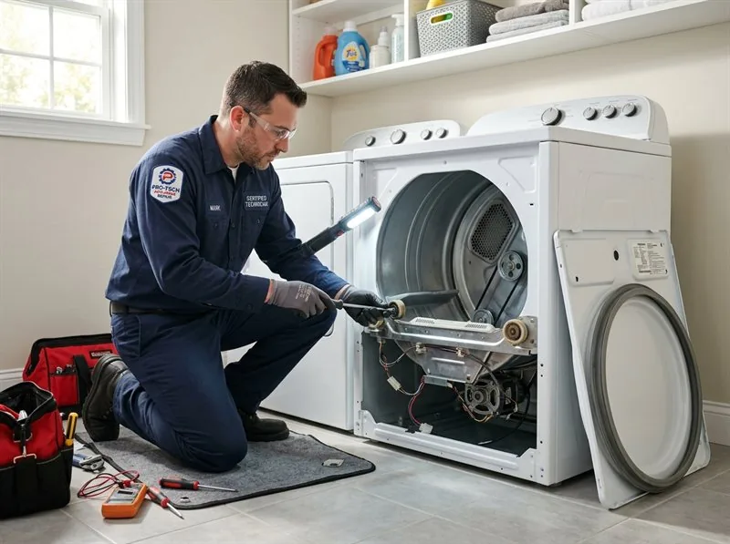
02↯Restore flow
Electric Dryer Repair
Our electric dryer repair service addresses common issues like malfunctioning thermostats and broken heating elements. We serve the Sarasota area, providing prompt and effective solutions.
Explore Electric Dryer Repair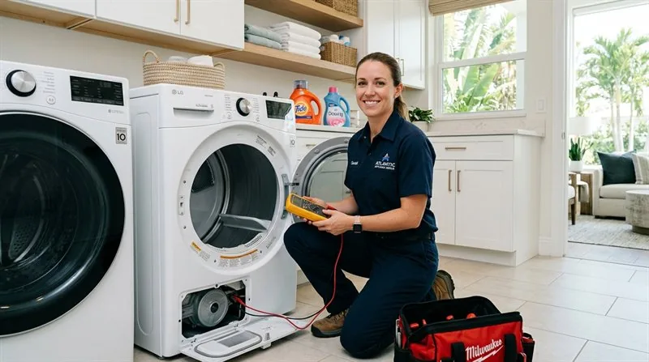
03♨Reliable service
Dryer Belt Replacement
A worn-out dryer belt can prevent your appliance from functioning. We offer dryer belt replacement services in Sarasota, ensuring your dryer operates smoothly again.
Explore Dryer Belt Replacement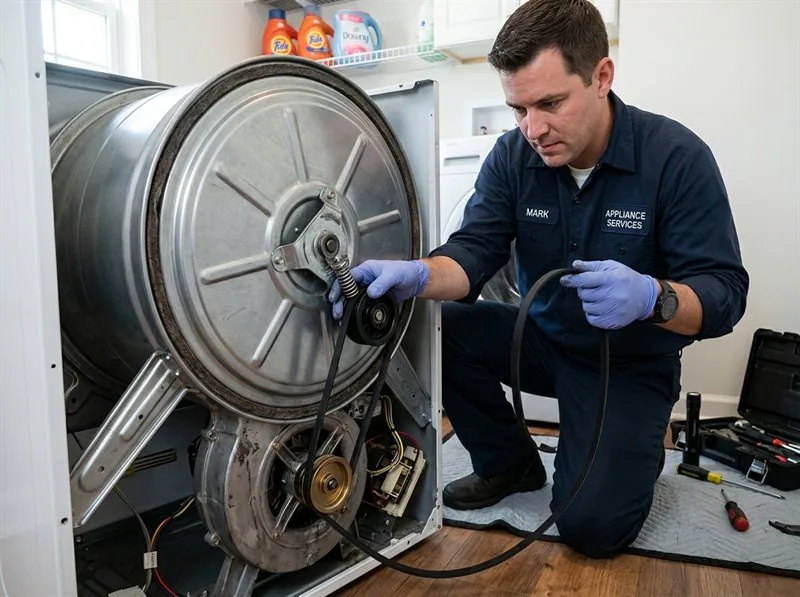
04⚑Trusted repairs
Dryer Not Starting Repair
If your dryer won't start, we can help. Our technicians diagnose and repair issues quickly, providing peace of mind for homeowners in Sarasota.
Explore Dryer Not Starting Repair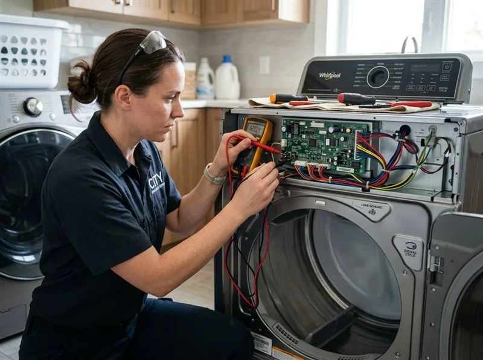
05!Urgent response
Gas Dryer Repair
Our gas dryer repair services cover everything from ignition issues to gas line repairs. We ensure your appliance operates safely and efficiently in Sarasota.
Explore Gas Dryer Repair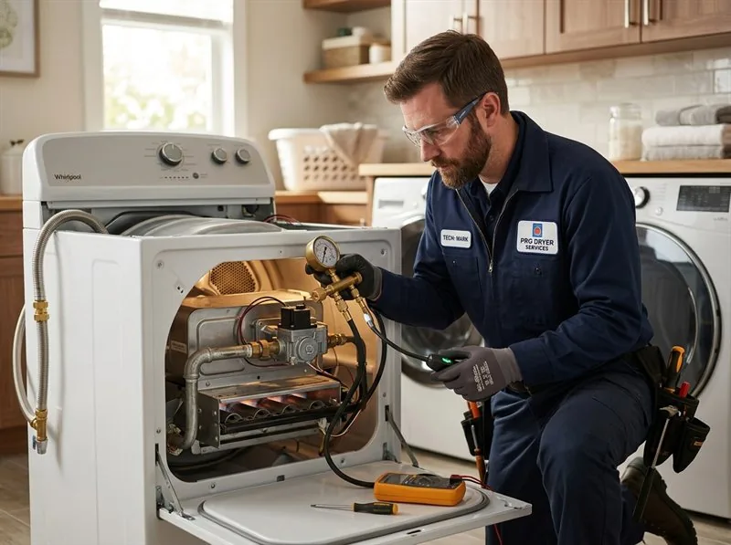
06✺Fire prevention
Dryer Vent Cleaning & Inspection
Rotary brush duct sweeping and airflow velocity checks clear stubborn lint blockages, eliminate fire risks, and restore single-cycle drying efficiency.
Explore Dryer Vent Cleaning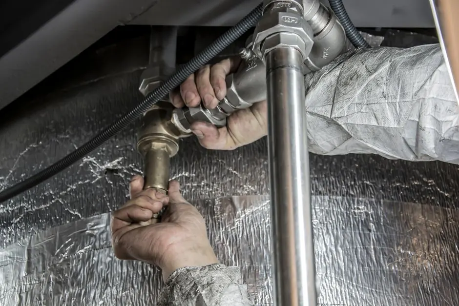
07⚙Quiet restored
Dryer Noise & Squeaking Repair
Stop loud squealing, thumping, and grinding. We install genuine factory-sealed drum support rollers, idler pulleys, and glide bearings for whisper-quiet cycles.
Explore Dryer Noise Repair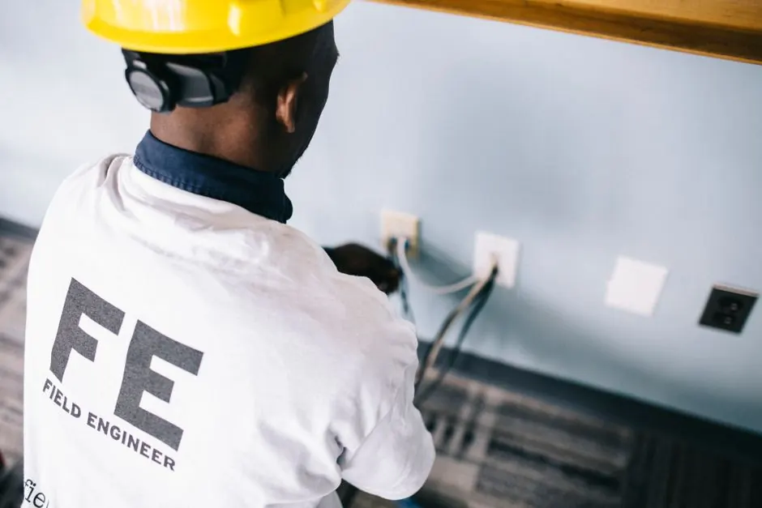
08⏱Fast drying
Dryer Taking Too Long to Dry
Tired of running two or three cycles for damp clothes? We diagnose weak heating elements, cycling thermostats, blower fans, and moisture sensor strips.
Explore Slow Dryer Solutions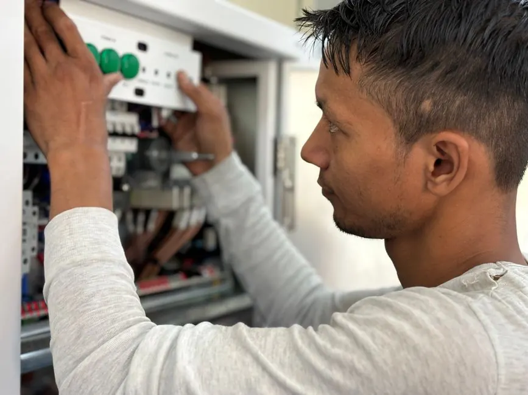
09↻Drive assembly
Dryer Drum Not Spinning
If the motor runs or hums but the drum refuses to turn, we quickly replace snapped drive belts, align seized pulleys, and test start windings on-site.
Explore Drum Not Spinning Repair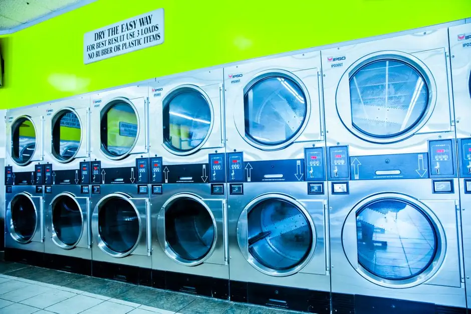
10⚠Urgent Priority
Emergency Dryer Repair
Sparks, breaker trips, overheating, or suspected gas valve leaks handled with immediate priority dispatch across Sarasota County.
Explore Emergency Service
11⚙Commercial Grade
Commercial Dryer Repair
Specialized same-day service for Speed Queen, Maytag coin-op, double-stack units, and laundromats. Fast parts delivery for multi-family and condo HOAs.
Explore Commercial Dryer Repair
12!Fire Safety
Dryer Burning Smell & Overheating
Stop dangerous lint fires and motor burnouts. Emergency diagnostic testing for scorched heating coils, melted wire terminals, and seized friction belts.
Explore Burning Smell Repair
Not sure which category fits? Tell us what you see, hear, or smell and we'll route the right technician.
Describe the problemComprehensive dryer system diagnostics
Specialized Dryer Component Diagnostics & Testing in Sarasota
Clothes dryers rely on a synchronized balance of airflow, electrical voltage, thermal monitoring, and mechanical drive assemblies. We test every critical component to pinpoint the exact failure point.
Heating Coils & Burner Diagnostics
Precision multi-meter resistance testing for broken heating coils, gas ignition coils, burner valves, and radiant sensors to restore dependable heat.
Call Dispatch: 941 288 9768Thermal Fuses & High-Limit Thermostats
Testing safety limiters that protect your home from overheating. We replace tripped thermal fuses and identify the underlying airflow restriction.
Call Dispatch: 941 288 9768Drum Rollers, Axles & Idler Pulleys
Resolving loud squeaking, metal grinding, and drum binding. We lubricate and replace worn drum support rollers, axle pins, and tensioner pulleys.
Call Dispatch: 941 288 9768Drive Belts & Motor Start Switches
Replacing stretched or snapped drive belts and troubleshooting centrifugal motor start switches to restore smooth drum spin and rotation.
Call Dispatch: 941 288 9768Electronic Control Boards & Sensors
Advanced digital diagnostics for modern smart dryers. Relays, error code decoding, moisture sensor bar testing, and touch panel troubleshooting.
Call Dispatch: 941 288 9768Blower Wheels & Exhaust Duct Clearing
Eliminating lint blockages, replacing stripped blower wheel hubs, and ensuring unobstructed airflow through internal transition ducts.
Call Dispatch: 941 288 9768From call to all clear
Our 4-Step Professional Dryer Repair Process
You always know what happens next, what needs your approval, and how we confirm the repair worked.
Step 1: Rapid Scheduling & Dispatch
We begin with a quick phone assessment to understand your dryer symptoms and dispatch a local Sarasota crew.
Step 2: Diagnostic Assessment & Testing
Our technicians arrive on time and conduct a thorough diagnostic assessment of your dryer to pinpoint the problem.
Step 3: Precision Repair with OEM Parts
With your approval, we proceed with precision repairs using factory-certified replacement parts.
Step 4: Safety Check, Heat Test & Cleanup
After repairs, we run complete heat and airflow cycle tests to ensure optimal performance before leaving your home.
Why homeowners choose us
Why Sarasota Residents Choose Our Dryer Specialists
We stand out for our commitment to quality, same-day responsiveness, and customer satisfaction across Sarasota County.
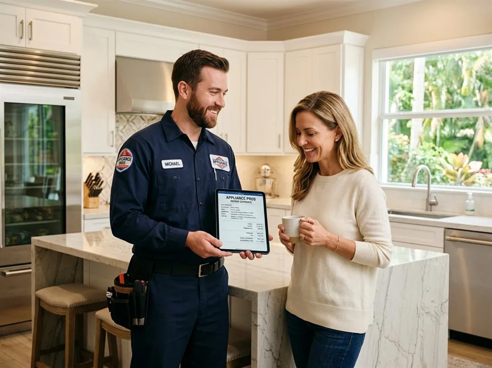
SAME-DAYFast mobile dispatch across all Sarasota communities
Questions before we arrive
Frequently Asked Questions About Dryer Repair Services in Sarasota
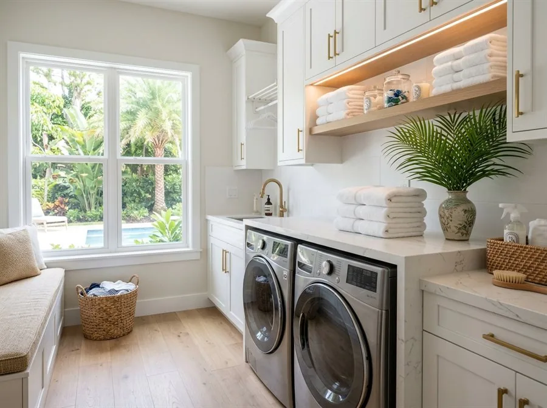
Still unsure? A dispatcher can help identify the safest immediate step and the right appointment type.
Ask dispatch nowHow much does dryer repair cost in Sarasota, FL?
Dryer repair costs depend on the required diagnosis, dryer model, and parts needed (such as thermal fuses, belts, or heating elements). We provide upfront, transparent estimates before any repair work begins, with no hidden fees.
Why is my dryer running but not heating in Sarasota?
If your dryer tumbles without heat, it typically stems from a burnt heating element, a failed thermal fuse, or a faulty cycling thermostat. On gas dryers, it may be a failed igniter or gas solenoid coil.
How quickly can a dryer repair technician come to my Sarasota home?
We typically offer same-day service for dryer repairs across Sarasota County, ensuring your laundry appliance issue is addressed promptly.
Do you repair both gas and electric dryers?
Yes, we provide full repair and maintenance services for both 240V electric dryers and natural gas/propane dryers, including gas safety inspections.
What dryer brands do you service?
We service all major brands including Whirlpool, Samsung, LG, GE, Maytag, Kenmore, Bosch, Electrolux, Speed Queen, Frigidaire, KitchenAid, and Amana using genuine quality replacement parts.
A problem does not improve with waiting
Need Fast Dryer Repair in Sarasota? Schedule Same-Day Service
Contact us for fast and reliable dryer repair services. Our team is ready to help you get your appliance running smoothly again.
Talk with the local team
Schedule Your Sarasota Dryer Repair Service
We're here to help! Reach out to us for any dryer repair needs. Our team is available during business hours to assist you.
Instant Phone Dispatch
Call Directly for Immediate Service
No waiting for email replies or form submissions. Speak directly with our local Sarasota dispatch team to confirm technician availability and service appointment times.
- Equipped Service Vans: Stocked with common dryer parts
- Upfront Quotes: Clear diagnostic estimates before work
- All Brands Serviced: Electric & gas dryer specialists
- Local Dispatch: Originating from 3856 Yellowstone Cir